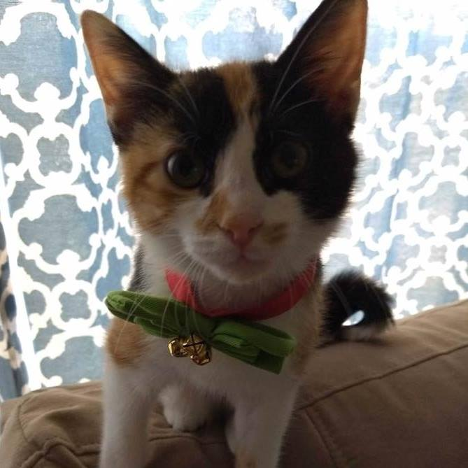

About Me
Hi my name is Fern. I'm trying to teach my dad (Ryan Weston) full-stack web-dev so he can keep buying me treats. And Nerf guns. He's a great piano teacher, but he needs a new day job--hopefully one that lets him be home sometimes.
Whenever Ryan is stumped, I jump on the computer and type out sections of code for his reference. Unfortunately he writes this off as nonsense and then tries to distract me by shooting a foam ball down the stairs (I love those things! I've hidden close to 30 of them.) So thank you, University of Richmond and Trilogy Education Services for providing him with an opportunity to "learn from other humans".
Connect with Me